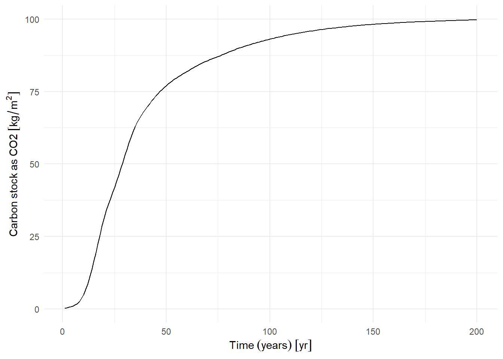
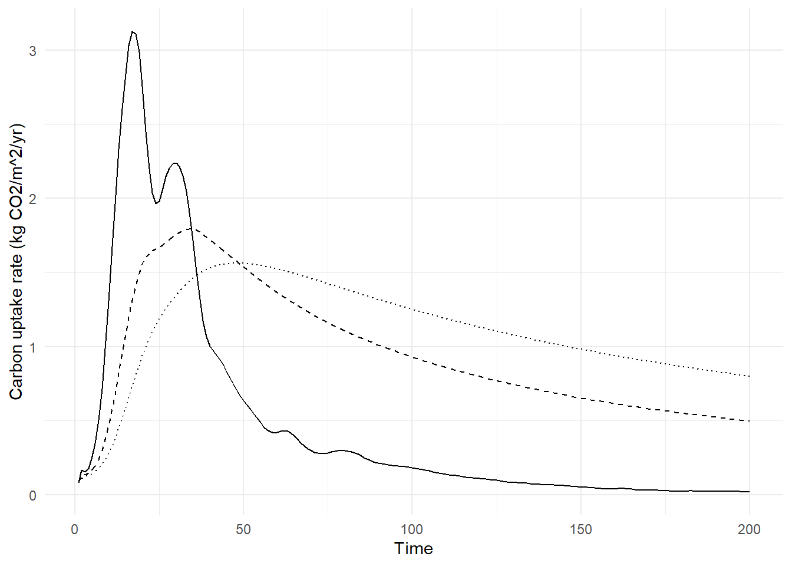

Feasibility of offsetting methane emissions from cows by planting trees.
Question:
What area of land would need to be planted with trees to make up for the methane emissions from grazing cattle?
This may seem a simple question, but equating the two sides of the equation is complicated because it is hard to compare like with like. Emissions from grazing (adult) cattle are constant over time, and depend only on the number of cattle, not the area they occupy. Uptake by planted woodland is proportional to the area and varies strongly over time: initially zero or negative after planting, then positive until a peak growth rate after ~30-50 years, then declining to zero as the woodland matures. At some point a mature woodland reaches equilibrium and becomes carbon neutral (where photosynthesis is balanced by total ecosystem respiration).
So the question posed cannot be answered without specifying a time period over which to consider the balance between emissions and uptake. We can rephrase the question in a number of ways, depending on how we choose to compare the two.
- What area of land would need to be planted with trees to offset the methane emissions from a single cow over the next 25 years (i.e. so as to meet the Net Zero 2050 target for that single cow)?
- What area of land would need to be planted with trees to offset the methane emissions from a single cow over the next 100 years?
- On a single farm with a fixed area, how long could grazing continue at a reasonable stocking density before the area of the land needed for woodland precludes grazing?
The timing of the woodland planting is also important, so we also need to distinguish whether this happens at the start of a project or is continuously on-going over time. There is a big benefit to the former.
We can consider each of these questions, given some parameters for emissions from cows and uptake by trees.
Methane from cows
One dairy cow emits about 100 kg of methane per year from enteric fermentation; for non-dairy cattle, the value is ~50-75 kg/yr - e.g. see here or here). Methane emissions from manure adds around 20% to this. Here we use a value of 75 x 1.2 = 90 kg of CH4 as an average, intermediate between beef and dairy.
Methane has a global warming potential about 25 times that of CO₂ over a 100-year period, so that is equivalent to 2250 kg of CO₂ per year. The UK has a cattle population of around 9.5 million, so an annual emission of 21.36 Tg CO\(_2\)-e/yr.
Carbon uptake by trees
For a crude comparator, 2250 kg of CO₂ is equivalent to a mature Sitka spruce tree (dbh of 40 cm, age ~60 years (Levy et al. 2004)). So we need to add one mature tree, requiring 60 years to grow and occupying about 16 m\(^2\) (4 m spacing), for each cow, every year.
To be properly quantitative so as to answer questions 1-3, we need to consider the time course of tree growth in woodlands. Below, we show data for sycamore/ash/birch from the Woodland Carbon Code carbon calculation spreadsheet. (version 2.4.1, April 2024). We use this as typical of UK planting for conservation projects in answering the questions below, but other species could be chosen. Results for Sitka spruce, the main commercial species, are rather similar, although the peak growth occurs later.
The annual change in carbon stock gives the annual flux of CO₂ into the woodland shown below. The solid line shows the instantaneous annual flux in that year, while the dashed line shows the mean flux over the period since planting. Given the time period of interest, we can use the latter to compare with the constant annual emissions from cows.

Q1a. What area of land would need to be planted with trees in 2025 to offset the methane emissions from a single cow over the next 25 years (i.e. so as to meet the Net Zero 2050 target for that single cow)?
In this scenario, we consider the area of woodland planted in 2025 needed to offset the methane emissions from a single cow over the following 25-year period, up to 2050. The whole woodland grows to an age of 25 years over this time. From Figure 1, the carbon sequestration in woodland over this period is 41.95 kg CO\(_2\) / m\(^2\), so a mean uptake rate of 1.68 kg CO\(_2\) / m\(^2\) / year (dashed line in Figure 2). The emissions from one cow is a constant 2250 kg CO\(_2\) / year. So, to offset the 25-year emissions from one cow, you would need to plant 1341 m\(^2\) of new woodland (2250 kg CO₂ divided by 1.68 kg CO\(_2\)/m\(^2\)).
In some ways, the area the cattle occupy does not matter - you just need to plant 1341 m\(^2\) of new woodland per head of cattle. However, if you want to express the required afforestation as a fraction of the land area used for grazing, we need to specify the cattle stocking density. A typical stocking density for conservation grazing is ~0.25 LU/ha = 1 cow per 4 hectares = 1 cow per 40,000 m\(^2\). The required 1341 m\(^2\) of woodland would constitute 3.3525 % of the grazed area. A more typical stocking density for conventional grazing is ~1 LU/ha = 1 cow per 10,000 m\(^2\). The required 1341 m\(^2\) of woodland would constitute 13.41 % of the grazed area.
Q1b. What area of land would need to be planted with trees each year to offset the methane emissions from a single cow over the next 25 years (i.e. so as to meet the Net Zero 2050 target for that single cow)?
In this scenario, we consider the total area of woodland that would need to be planted to offset the methane emissions from a single cow over the 25-year period 2025-2050, if the woodland planting was on-going with an equal area planted each year. Only 1/25th of the woodland grows to an age of 25 years over this time, so the mean uptake rate is lower - the dotted line in Figure 2. The mean carbon sequestration across the mixed age woodland over this period is 1.19 kg CO\(_2\) / m\(^2\) / year. The emissions from one cow is still a constant 2250 kg CO\(_2\) / year. So, to offset the 25-year emissions from one cow, you would need to plant 1895 m\(^2\) of new woodland (2250 kg CO₂ divided by 1.19 kg CO\(_2\)/m\(^2\)).
At a typical stocking density for conservation grazing is ~0.25 LU/ha = 1 cow per 40,000 m\(^2\), the required 1895 m\(^2\) of woodland would constitute 4.7375 % of the grazed area. At the more typical stocking density for conventional grazing of 1 LU/ha = 1 cow per 10,000 m\(^2\), the required 1895 m\(^2\) of woodland would constitute 18.95 % of the grazed area.
Q2a. What area of land would need to be planted with trees in 2025 to offset the methane emissions from a single cow, over the next 100 years?
Here, we repeat the same calculations but consider a longer time period where the woodland is assumed to grow to 100 years old. This makes a difference because tree growth is slow initially, faster from ~15-30 years, and then tails off to zero. The exact shape of the curve depends on the species.
In this scenario, we consider the area of woodland planted in 2025 needed to offset the methane emissions from a single cow over the following 100-year period, up to 2125. The whole woodland grows to an age of 100 years over this time. From Figure 1, the carbon sequestration in woodland over this period is 93.1 kg CO\(_2\) / m\(^2\), so a mean uptake rate of 0.93 kg CO\(_2\) / m\(^2\) / year (From Figure 2). The emissions from one cow is a constant 2250 kg CO\(_2\) / year. So, to offset the 100-year emissions from one cow, you would need to plant 2417 m\(^2\) of new woodland (2250 kg CO₂ divided by 0.93 kg CO\(_2\)/m\(^2\)).
To express the required afforestation as a fraction of the land area used for grazing, we specify the same cattle stocking densities as before. At a typical stocking density for conservation grazing of ~0.25 LU/ha = 1 cow per 40,000 m\(^2\), the required 2417 m\(^2\) of woodland would constitute 6.0425 % of the grazed area. At the more typical stocking density for conventional grazing of ~1 LU/ha = 1 cow per 10,000 m\(^2\), the required 2417 m\(^2\) of woodland would constitute 24.17 % of the grazed area.
Q2b. What area of land would need to be planted with trees each year to offset the methane emissions from a single cow over the next 100 years
In this scenario, we consider the total area of woodland that would need to be planted to offset the methane emissions from a single cow over the 100-year period 2025-2125, if the woodland planting was on-going with an equal area planted each year. Only 1/100th of the woodland grows to an age of 100 years over this time, and a bigger area is in the peak growth stage, so the mean uptake rate is higher - the dotted line in Figure 2. The mean carbon sequestration across the mixed age woodland over this period is 1.25 kg CO\(_2\) / m\(^2\) / year. The emissions from one cow is still a constant 2250 kg CO\(_2\) / year. So, to offset the 100-year emissions from one cow, you would need to plant 1798 m\(^2\) of new woodland (2250 kg CO₂ divided by 1.25 kg CO\(_2\)/m\(^2\)).
At a typical stocking density for conservation grazing is ~0.25 LU/ha = 1 cow per 40,000 m\(^2\), the required 1798 m\(^2\) of woodland would constitute 4.495 % of the grazed area. At the more typical stocking density for conventional grazing of 1 LU/ha = 1 cow per 10,000 m\(^2\), the required 1798 m\(^2\) of woodland would constitute 17.98 % of the grazed area.
National-scale context
To put these numbers in a national-scale context, we need to consider the UK population of cattle and the land area available.
To offset the UK cattle herd of ~9.5 million Defra 2024, half dairy and half beef, we can look at the national area of woodland planting required, given the four scenarios. For comparison, the current UK annual new planting rate is 206.6 km\(^2\)/yr in 2023/4 FR 2024. The target planting rate is 300 km\(^2\)/yr.
1a. To offset the UK cattle emissions up to 2050 with up-front planting, we would need to plant 12729 km\(^2\) in 2025/6. This is 62 times the current planting rate, and equivalent to 5.2 % of the total UK land area.
1b. To offset the UK cattle emissions up to 2050 with on-going annual planting, we would need to plant 719 km\(^2\) each year until 2050. This is 3 times the current planting rate, and would give a total area equivalent to 7.4 % of the total UK land area.
2a. If we consider a 100-year period for woodland growth, we would need to plant 22943 km\(^2\) up-front in 2025/6. This is 111 times the current planting rate, and equivalent to 9.4 % of the total UK land area.
2b. With on-going annual planting over 100 years, we would need to plant 171 km\(^2\) each year until 2125. This is 0.83 times the current planting rate, and would give a total area equivalent to 7.02 % of the total UK land area.
Q3. On a single farm with a fixed area, how long could grazing continue at a reasonable stocking density before the area of the land needed for woodland precludes grazing?
Less arbitrarily, we could assume that both the grazing and afforestation take place within the same fixed area. In this case, we start with 40000 m\(^2\) of grassland per cow, and convert 1798 m\(^2\) to woodland each year, assuming option 2b of an intended 100-year time horizon. In this scenario, grassland is gradually displaced by woodland over time, so the cattle stocking density increases until the whole area is covered by woodland after 22 years.
Conclusions
Comparing methane emissions from cows and CO\(_2\) uptake by trees is not straightforward but a few points are clear.
- Carbon sequestration from planted woodland is transient (it occurs over a few decades and then declines to zero), whilst methane emissions per cow are constant.
- Because of this, in the long term we need to keep continually planting new woodland to offset constant emissions.
- To compare like-with-like, we need to specify a time period and a tree planting schedule (e.g. all-at-once or continuous).
- To offset emissions from the current UK cattle herd over the next 25 years, in time to meet the Net Zero 2050 target, we need to plant an additional 7 % of the total UK land area, requiring 3 times the current planting rate for 25 years (option 1b). Planting the required area up-front in 2025/26 (12729 km\(^2\), option 1a) is not practically feasible. Considering on-going annual planting over 100 years makes this feasible within the current planting rate, but delays reaching a net zero balance until 2125.
In general, the uptake capacity of woodland planting on the scale feasible in the UK is small compared to the size of the emissions from the UK cattle population. At the current planting rate, we are sequestering 1.211 % of the emissions from the UK cattle population (0.2586 Tg CO\(_2\)/yr, compared with emissions from the UK cattle population of 21.36 Tg CO\(_2\)-e/yr).
References
Levy, P. E., S. E. Hale, and B. C. Nicoll. 2004. “Biomass Expansion Factors and Root: Shoot Ratios for Coniferous Tree Species in Great Britain.” Forestry 77 (5): 421–30. https://doi.org/10.1093/forestry/77.5.421.